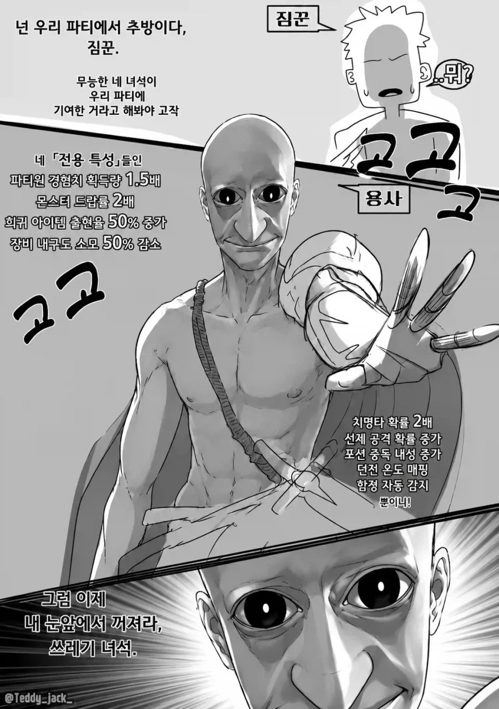
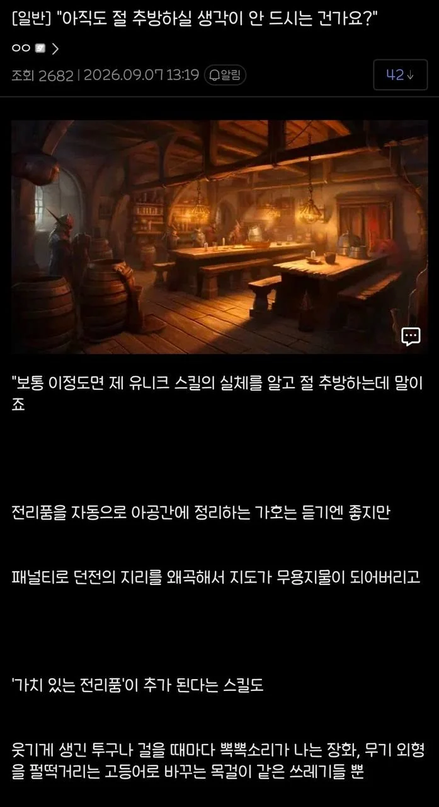
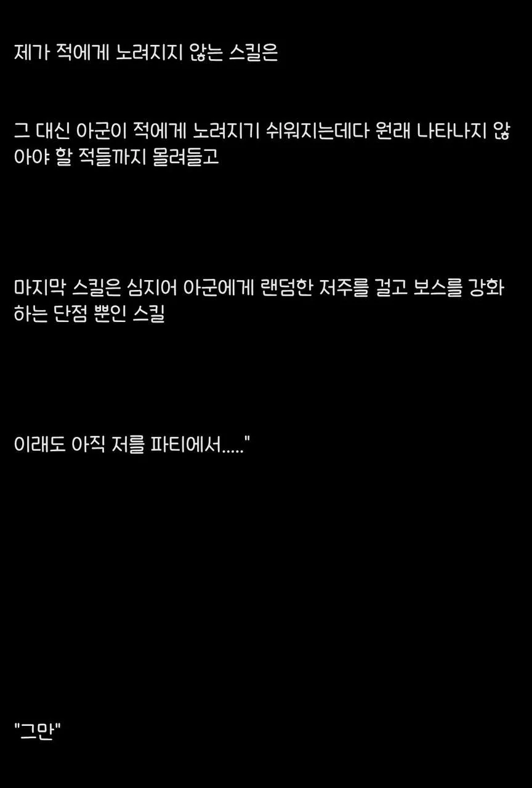
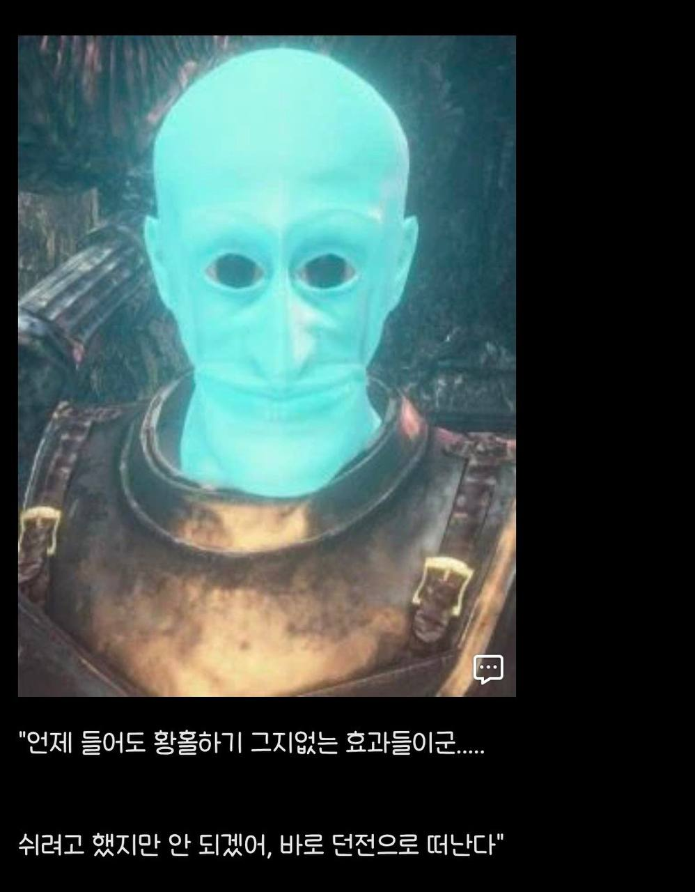

고인물 무발기사정




고인물 무발기사정
아군한터 저주걸고 보스강화하는 스킬을 왜 배웠어!!
웃기게 생긴 투구 = 고인물 전용 룩딸
뽁뽁소리가 나는 장화 = 어그로 끌려서 몹이 달려옴
펄떡 거리는 고등어 무기 외형 = 룩딸 최고의 외형
+전리품은 자동으로 줍는 펫기능
귀찮은건 다 넘길수있고 맛있는건 다취할수있음
심지어 패널티로 던전 지리 왜곡 = 매번 새로운 지형의 던전 가능 ㄷㄷ
생긴 거 ㅅㅂ ㅋㅋㅋ
내 커스텀 캐릭터는 과몰입 방지용으로 항상 형광색 아프로 머리에 광대 코, 무기는 생선이나 장난감 스킨, 옷은 항상 배경과 이질적인 쫄쫄이를 입지.
심심해 죽겠다 생각할때 등장한 너는 빛과 같은 존재다
고인물룩딸템드랍 개체수증가 랜덤디버프 보스강화 아군너즐록
못참겠다
넌 파티 영구귀속이다

저렇게 생겨도 용사 ㅋㅋㅋㅋㅋㅋㅋㅋ
컨텐츠 생성기 절대못놔줘!!!!
예전에 게일 십새끼 존나 안뒤져서
프롬갤에서 코옵한적 있는데...
핑크빛 망자가 도륙해주더라
판마다 무작위 맵 생성, 치장아이템 드롭, 하드코어 모드까지 가능하게 해주는 펫이 적한테 공격도 안당해?? 미친련
몬헌 할 때 넬기 도저히 못잡겠어서 구조요청 했더니 딱 저렇게 생긴 고인물들이 달려와서 대신 잡아줌.
그거 보고 바로 접었다.
아 왜 가지마 어딜가 돌아오ㅏ..
망자들은 저렇게 룩을 안꾸미면 안되는 규칙이라도 있는가...
뭐엿더라, 존나 칼춤 추면서 다가갔는데 고인물이 제자리에서 패링치는거보고 움찔움찔 하다가 도망가는게 있었는데.
그게 제일 무섭더라고 ㅋㅋㅋㅋㅋ
아 그 밀레니아 칼춤 추면서 오는데 패링하는 짤 ㅋㅋㅋㅋㅋ
와, 엘든링하는데 매번 레거시 던전 구조 바뀌는 로그라이크 된다고 생각하니까 진짜 발기되겠는데?
고등어외형?? 이걸 참아?
니가 먼저 꼬신거다